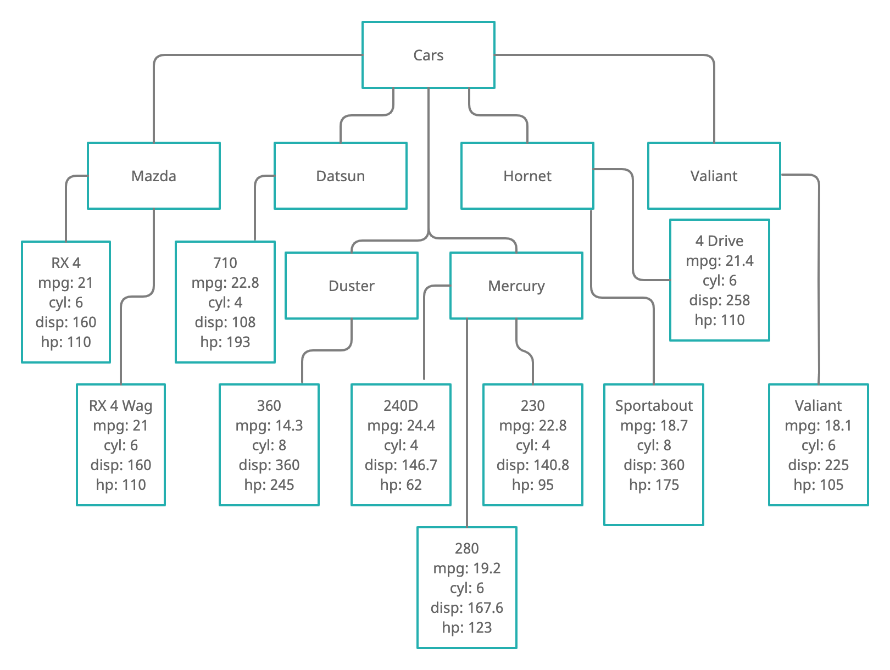
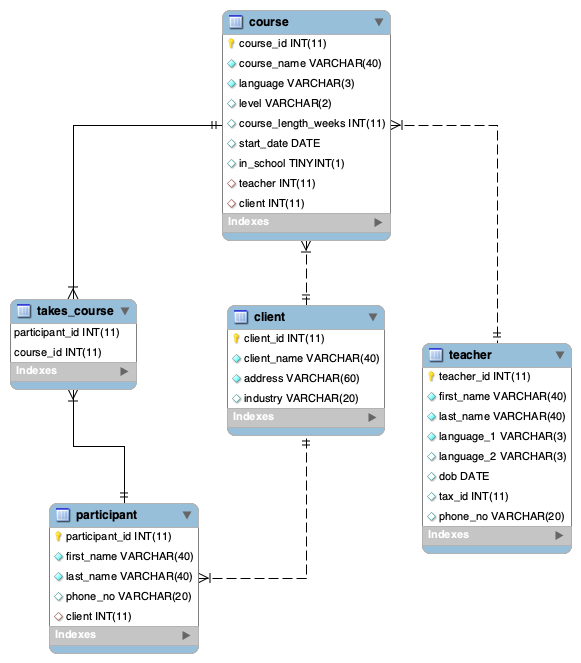

| mpg | cyl | disp | hp | |
|---|---|---|---|---|
| Mazda RX4 | 21.0 | 6 | 160.0 | 110 |
| Mazda RX4 Wag | 21.0 | 6 | 160.0 | 110 |
| Datsun 710 | 22.8 | 4 | 108.0 | 93 |
| Hornet 4 Drive | 21.4 | 6 | 258.0 | 110 |
| Hornet Sportabout | 18.7 | 8 | 360.0 | 175 |
| Valiant | 18.1 | 6 | 225.0 | 105 |
| Duster 360 | 14.3 | 8 | 360.0 | 245 |
| Merc 240D | 24.4 | 4 | 146.7 | 62 |
| Merc 230 | 22.8 | 4 | 140.8 | 95 |
| Merc 280 | 19.2 | 6 | 167.6 | 123 |
6 Data Structures
This lesson provides a conceptual introduction to different ways of structuring data.
Learning Goals
After this lesson, you should be able to:
- Describe the differences between several different data structures
- Identify the structure of dataset
- Explain the pros and cons of different data structuring approaches
6.1 What Are Data?
Merriam-Webster’s Dictionary defines data as:
- factual information (such as measurements or statistics) used as a basis for reasoning, discussion, or calculation
- information in digital form that can be transmitted or processed
- information output by a sensing device or organ that includes both useful and irrelevant or redundant information and must be processed to be meaningful
Several key principals are introduced in the above definition:
- data is an intermediary step leading towards some form of analysis or or presentation, not typically an end in itself
- data comes in multiple formats, both digital and analogue
- data can be collected by both humans and machines
- not all data in a given dataset is necessarily meaningful, correct nor useful
Data Scientists (as differentiated from statisticians or computer scientists, for example) are expert in understanding the nature of data itself and the steps necessary to assess the suitability of a given data set for answering specific research questions and the work required to properly prepare data for successful analysis. In the broadest terms, we call this process data forensics.
The first step in the data forensics process is understanding the format(s) through which data are stored and transferred.
6.2 Tabular Data
Tabular data is the most ubiquitous form of data storage and the one most familiar to most users. Tabular data consists of organizing data in a table of rows and columns. Traditionally, each column in the table represents a field or variable and each row represents an observation or entity. For example, the table below shows a tabular organization of a subset of the mtcars dataset:
6.3 Tree / Document Data Structures
Another popular form of data structure is the tree structure, sometimes referred to as a document-based data structure. Tree data structures present data in a hierarchical tree-like structure in which all items related back to a single, root node. A “Family Tree” is a good example of tree structured data:
The mtcars data from the above table can also be represented using a tree structure:

The above image visually depicts the mtcars data as a tree, which works well for a human reader but is not parsable by the computer. There are a variety of ways to represent tree data as a computer file (or data stream) so that it can be read and parsed by the computer. In this class, we will cover two of the most popular formats: XML and JSON.
6.3.1 Structuring Data as XML
XML stands for extensible markup language. Markup languages have been around since the 1960s and were originally developed as a means of adding structured information to an existing unstructured text. In the days of analog text preparation, professional editors typically used a blue or red pencil to make notes on typed manuscripts. The use of a specially colored pen or pencil for “marking up” documents, as the procedure was known in the industry, easily allowed subsequent readers to distinguish between editorial comments and formatting notes on typed manuscripts from the text itself. Computerized markup languages were developed as a means of allowing data specialists to markup a text in a manner that would allow the computer to distinguish between textual content and meta-information (information about the text) when both types of information appear in the same file.
XML is the most widely used form of markup today. In fact, nearly every webpage that you have ever viewed is actually an XML document that contains both content to be displayed and instructions for the computer on how to display that content embedded in the file using XML tags, which are simply instructions contained with the special characters < and >. For example, consider the following short email text:
To: Tavi
From: Jonna
Subject: Meeting
Date: Thursday, February 4, 2021 at 2:46 PM
Don't forget about meeting with Sarah next week, 2pm in room 242.
Thanks,
JonnaThis email contains quite a bit of structured email (sender, receiver, date/time, etc.), but there is no easy way for the computer easily extract this structure. We can solve this problem by using XML to embed information about the structure directly in the document as follows:
<head>
<to>Tavi</to>
<from>Jonna</from>
<subject>Meeting</subject>
<datetime>
<dayofweek>Thursday</dayofweek>
<month>February</month>
<day>4</day>
<year>2021</year>
<time>2:46 PM</time>
</datetime>
</head>
<body>
Don't forget about meeting with Sarah next week, 2pm in room 242.
Thanks,
<signature>Jonna</signuature>
</body>By using XML, we are able to identify specific information in the email in a way that the computer is a capable of parsing. This allows us to use computational methods to easily extract information in bulk from many emails and it also allows us to program a computer program, such as an email client, to organize and properly display all of the parts of the email.
The above XML example illustrates several important aspects of XML:
- All XML tags are enclosed in
<and>symbols. - There are 2 primary types of tags, opening tags, which designate the beginning character that is defined by the tag, and closing tags, which designate the end of the portion of the text to be associated with the opening tag.
- Closing tags are always indicated by slash character, as in
</TAG>, whereTAGis the name of the opening tag that is being closed. - Tags be be embedded within each other in a tree-like structure. However, any tags opened within a tag must be closed before that tag can be closed. For example,
<name><first>John</first> <last>Doe</last></name>is valid, but<name><first>John</first> <last>Doe</name></last>is not valid.
While XML was originally developed as a means of embedding meta information about a text directly in a text, it also quickly evolved into a stand-alone means of representing tree-structured data for exchange between computer systems. To this end, many computer applications use XML to store, share, and retrieve data. For example, we can represent the data in our truncated mtcars dataset as XML as follows:
<cars>
<make id="mazda">
<model id="RX4">
<mpg>21.0</mpg>
<cyl>6</cyl>
<disp>160.0</disp>
<hp>110</hp>
</model>
<model id="RX4 Wag">
<mpg>21.0</mpg>
<cyl>6</cyl>
<disp>160.0</disp>
<hp>110</hp>
</model>
</make>
<make id="Datsun">
<model id="710">
<mpg>22.8</mpg>
<cyl>4</cyl>
<disp>108.0</disp>
<hp>93</hp>
</model>
</make>
<make id="Hornet">
<model id="4 Drive">
<mpg>21.4</mpg>
<cyl>6</cyl>
<disp>258.0</disp>
<hp>110</hp>
</model>
<model id="Sportabout">
<mpg>18.7</mpg>
<cyl>8</cyl>
<disp>360.0</disp>
<hp>175</hp>
</model>
</make>
<make id="Valiant">
<model id="valiant">
<mpg>18.1</mpg>
<cyl>6</cyl>
<disp>225.0</disp>
<hp>105</hp>
</model>
</make>
<make id="Duster">
<model id="360">
<mpg>14.3</mpg>
<cyl>8</cyl>
<disp>360.0</disp>
<hp>245</hp>
</model>
</make>
<make id="Merc">
<model id="240D">
<mpg>24.4</mpg>
<cyl>4</cyl>
<disp>146.7</disp>
<hp>62</hp>
</model>
<model id="230">
<mpg>22.8</mpg>
<cyl>4</cyl>
<disp>140.8</disp>
<hp>95</hp>
</model>
<model id="280">
<mpg>19.2</mpg>
<cyl>6</cyl>
<disp>167.6</disp>
<hp>123</hp>
</model>
</make>
</cars>For an XML dataset to be technically valid, the tags used to markup the dataset must themselves be defined according to a schema, another XML document that defines all tags that can be used in marking up a dataset and the allowable tree structure of the markup (for example, which tags can be parents of which other tags, etc.). You do not need to understand, or even know, the schema being used to present data in order to read and parse an XML document. However, schemas are extremely useful (and often necessary) for building applications that perform advanced processing of XML documents, such as web browsers, email clients, etc.
See also
For more information on XML and XML schemas, see the W3Schools XML Tutorial.
6.3.2 Structuring Data as JSON
XML provides an excellent framework for encoding, saving, and transferring all kinds of data, and it was the dominant mode of transferring data across the internet for many years. However, XML has an Achilles’ Heel from the data transfer perspective: a lack of sparsity. If you look closely at the XML mtcars data set example above, you will note that the markup accounts for more of the total characters in the document than the data itself. In a world where data is regularly being exchanged in real time across networks, the use of XML can result in the necessity to exchange a lot more data to accomplish the same task. This adds both time and cost to every data transaction.
JavaScript object notation (JSON) was developed as a standard to address this problem and provides a sparse framework for representing data that introduces minimal, non-data elements into the overall data structure. JSON uses a key/value pair structure to represent data elements:
"model": "RX4"Individual data elements are then grouped to reflect more complex data structures:
{"model": {"id": "2", "hp": "120"}}The example below shows the subsetted mtcars dataset represented as JSON. Note the use of the [ character to indicated repeated elements in the data:
{
"cars": [{
"make": "Mazda",
"model": [{
"id": "RX4",
"mpg": "21.0",
"cyl": "6",
"disp": "160.0",
"hp": "110"
},
{
"id": "RX4 Wag",
"mpg": "21.0",
"cyl": "6",
"disp": "160.0",
"hp": "110"
}
]
},
{
"make": "Datsun",
"model": {
"id": "710",
"mpg": "22.8",
"cyl": "4",
"disp": "108.0",
"hp": "93"
}
},
{
"make": "Hornet",
"model": [{
"id": "4 Drive",
"mpg": "21.4",
"cyl": "6",
"disp": "258.0",
"hp": "110"
},
{
"id": "Sportabout",
"mpg": "18.7",
"cyl": "8",
"disp": "360.0",
"hp": "175"
}
]
},
{
"make": "Valiant",
"model": {
"id": "valiant",
"mpg": "18.1",
"cyl": "6",
"disp": "225.0",
"hp": "105"
}
},
{
"make": "Duster",
"model": {
"id": "360",
"mpg": "14.3",
"cyl": "8",
"disp": "360.0",
"hp": "245"
}
},
{
"make": "Merc",
"model": [{
"id": "240D",
"mpg": "24.4",
"cyl": "4",
"disp": "146.7",
"hp": "62"
},
{
"id": "230",
"mpg": "22.8",
"cyl": "4",
"disp": "140.8",
"hp": "95"
},
{
"id": "280",
"mpg": "19.2",
"cyl": "6",
"disp": "167.6",
"hp": "123"
}
]
}
]
}
See also
For information on the JSON format, see the Tutorials Point JSON Tutorial.
You can also use the JSONLint JSON Validator to check the syntax of any JSON representation.
6.4 Relational Databases
*Relational databases, frequently referred to as relational database management systems** (RDBMS), provide another way of structuring data. Unlike tabular, XML, and JSON data representations, RDBMS data is not easily human readable, and specialized software is usually required to interact with data stored as relational data. Most programming environments (including R) provide specialized drivers for communicating with RDBMS in order to facilitate working with data stored in these systems.
RDBMS have three primary purposes as a data storage format:
- To reduce duplication of data;
- To speed-up access and insertion of new data;
- To insure data integrity.
Items 2 and 3 above are accomplished at the software level, by deploying strict checks on data input, complex data indexing systems, and implementing redundant, automated, backup systems, to name just a few of the functionalities offered by RDBMS. Item 1 above, reducing duplication of data, is accomplished by using a specific, relational data structure that encourages the use of controlled lists of data mapped to individual observations. Looking at our mtcars subset data, for example, we see that while there are ten observations, there are only 6 makes of cars. To represent this in RDBMS, we first create a table, a named collection of data, that contains a unique list of car makes:
| id | Make |
|---|---|
| 1 | Mazda |
| 2 | Datsun |
| 3 | Hornet |
| 4 | Valiant |
| 5 | Duster |
| 6 | Merc |
MAKE_TABLE
Once we have a table of unique lists, we then create and populate a table of our cars, associating each car with its appropriate make from the MAKE_TABLE table:
| Make | Model | mpg | cyl | disp | hp |
|---|---|---|---|---|---|
| 1 | RX4 | 21.0 | 6 | 160.0 | 110 |
| 1 | RX4 Wag | 21.0 | 6 | 160.0 | 110 |
| 2 | 710 | 22.8 | 4 | 108.0 | 93 |
| 3 | 4 Drive | 21.4 | 6 | 258.0 | 110 |
| 3 | Sportabout | 18.7 | 8 | 360.0 | 175 |
| 4 | Valiant | 18.1 | 6 | 225.0 | 105 |
| 5 | 360 | 14.3 | 8 | 360.0 | 245 |
| 6 | 240D | 24.4 | 4 | 146.7 | 62 |
| 6 | 230 | 22.8 | 4 | 140.8 | 95 |
| 6 | 280 | 19.2 | 6 | 167.6 | 123 |
CARS_TABLE
In the above table, we only normalized the car Make field. In a fully normalized RDBMS data structure, we would also create a control table for the Model field in anticipation of the fact that we could have more than one observation for a given model. Fully normalized RBDMS data structures use control tables for all fields that contain string data.
The image below shows a sample entry relationship diagram (ERD) for a more complex dataset relating to course offerings and enrollments. Each line connecting two tables marks a field in a “join” table that uses the id field in a control table (known as a foreign key) to associate information in the control table with the records in the join table.

6.5 Non-Hierarchical Relational Data
In the era of the social network, it is becoming increasingly necessary to represent relationships between entities that are not hierarchical. Unlike a family tree, the fact that you are connected to someone on Facebook or Instagram does not imply any type of hierarchical relationship. Such networks are typically represented using the graph data structure:

Graphs consist of collections of vertices or nodes, the entities being graphed, and edges, the relationships between nodes.

Another important aspect of graph data is the concept of directionality. A directed graph indicates the direction of the relationship identified by the edge. We might, for example, wish to draw edges that indicate that one node was influenced by another node, in which case we could identify an “influence” edge and use directionality to indicate who influenced whom:

Graph data can be stored and or transferred using any of the data formats discussed above or using specialized graph databases management software.
6.6 Geospatial Data
Geospatial data represents a final type of data with its own unique data structure. Geospatial data is unique because it always relates directly to the physical world, and because it relies on world-wide standards which have been in development and communally accepted for hundreds of years. Because of its uniqueness as a data type, geospatial data is covered as a stand-alone topic in Chapter 16.